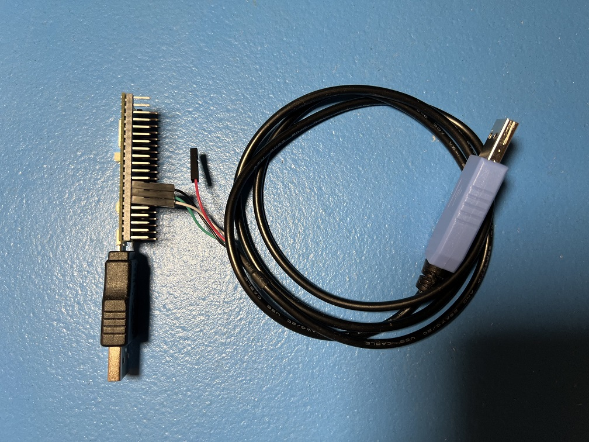

Computer Control (CC) Setup Guide

Jump To:
- Step 1: The Hardware
- Step 2: General Setup (setting up everything except the controller)
- Step 3: Controller Setup
- Step 4: Finishing up
This is the setup guide for the computer control (CC) automation setup. We recommend that you read this before purchasing any hardware. Cost estimates will vary depending on the method you choose.
The computer control (CC) automation setup consists of 4 main components:
- A computer.
- A Nintendo Switch.
- A video capture card.
- A controller to control the Switch.
The computer is the player. The capture card is its eyes. The controller is its hands.
Here is an example of a full setup using a Raspberry Pi Pico W microcontroller:
Step 1: The Hardware
The Computer: (the player)
You need a full computer to run CC programs. A phone or tablet will not work.
Specifically, the computer must:
- Be running 64-bit Windows 10 or later on an x64 CPU. (An Intel or an AMD CPU. You cannot use a Qualcomm Snapdragon.)
- Be sufficiently powerful.*
We recommend a quad-core CPU of 3+ GHz, no older than 2015. If you intend to control more than 1 switch, you will need a more powerful CPU with more cores. If you want to run 4 Switches all with feedback, we recommend a modern 8-core computer.
You will also need 2 spare USB ports. (or 2 ports per Switch if you intend to run multiple Switches)
MacOS:
CC is functional on MacOS albeit missing a few features present on Windows. A distributable is available for Intel and M1 Macs on MacOS Ventura (13) or later. For MacOS Monterrey (12) and earlier, you will need to follow an extra set of instructions to build CC from source code.
If you are an experienced developer with MacOS, your help in making MacOS feature-complete would be greatly appreciated!
Other Platforms:
Due to lack of developer support, our support of Linux is limited. While you can set these programs up on Linux, you will need to know how to run command-line build scripts.
If you are not willing to do that or you have no idea what this means, then stop. Unfortunately, you will not be able to run these programs unless you can go to Windows.
If you are willing and able to go down this rabbit hole:
- Linux builds have broken video and are thus not usable. We would love some help here!
The Nintendo Switch
If you're going to automate a Nintendo Switch game, then you need to have a Nintendo Switch.
However, it needs to be a regular Nintendo Switch that can be docked with HDMI video output. You cannot use a Switch Lite. We need the video output for the computer to see your Switch. Unfortunately you cannot just point a camera at the Switch Lite's screen since that comes with too much loss of quality. (Even if this worked, it's bad idea anyway since 24/7 gameplay will burn out the screen.)
Switch 2:
Yes, we support the Switch 2!
Partial support for Switch 2 began with version 0.54 for wired controllers only. Full support (including ESP32 wireless) began with version 0.56.
Video Capture Card (the computer's eyes)
A video capture card will allow a computer to capture the HDMI video output from your Nintendo Switch (or any other game console).
Example Shopping Links:
Most cheap capture cards work. Higher end-capture cards may cause issues with color detection. Ensure the capture card is capable of a video output resolution of 1080p at 30 frames per second (FPS). Though we recommend at least 1080p/60 FPS to minimize video tearing.
For Switch 2 owners, you do not need an (expensive) 4k capture card to run automation on the Switch 2. These cheap 1080p capture cards will work fine on the Switch 2. But if you don't mind the price, feel free to get a 4k capture card anyway for the better graphics quality. Automation will work on both 1080p and 4k.
The Controller: (the computer's hands)
The controller is the most difficult part to setup because there is no off-the-shelf product that will do it for you.
While we support quite a few different setups, these are the 3 that we recommend to new users:
| Wireless | Wired | Custom Firmware |
|---|---|---|
 |
||
| Supported Controller Types: - Switch 1: Wireless Pro Controller - Switch 1: Left Joycon - Switch 1: Right Joycon |
Supported Controller Types: - USB Keyboard - Switch 1: Wired Controller - Switch 2: Wired Controller |
Supported Controller Types: Wired Pro Controller |
| Recommended Microcontrollers: - Raspberry Pi Pico W - ESP32 |
Recommended Microcontrollers: - ESP32-S3 |
Recommended Microcontrollers: - None required. |
| Cheapest. Easiest to setup. Harder to use after setup. |
More Expensive. Harder to setup. Easiest to use after setup. |
Requires a hacked Switch running custom firmware (CFW). |
| Works on Switch 2. | Works on Switch 2. | Does not work on Switch 2 due to lack of CFW. |
| Runs nearly all programs - including LGPE.* | Cannot run LGPE programs. Runs all other programs.* |
sbb3: Identical to wired controllers. sbb2: Cannot run programs that require timing precision. |
| Slower and less reliable than wired. | Fastest and most reliable. | sbb3: Identical to wired controllers. sbb2: Very slow and unreliable. |
| Not recommended for remote access. Not recommended for high density setups due to wireless interference. |
Very good for remote access. Very good for high density setups. |
Not recommended for remote access. |
| Recommended for first time users. | Recommended for heavy users who want maximum reliability. | Recommended for existing CFW users who want to try CC programs with minimal investment. |
For a complete list of setups - including older ones we no longer recommend, see our Controller List.
Please consult the program list for the full compatibility table.
Recommendations:
| User Type | Recommendation | Comments |
|---|---|---|
| You are completely new to automation. | Pico W | Cheapest. Easiest to setup. |
| You want to automate LGPE. | Pico W or ESP32 | Wireless is required for LGPE. |
| You are a heavy user of automation with multiple Switches running 24/7. | ESP32-S3 | Most stable and reliable. No hassle after setup. |
| You are an existing Computer Control user who already has the Arduino/Teensy setup. | Keep what you have. | See the Controller List to find the guide to re-setup your hardware. |
| You are an experienced CFW user. | sys-botbase 3 | This setup is designed specifically for you at no additional cost (beyond a capture card)! |
A full comparison of prices and difficulty of setup can be found on the Controller List.
Also, don't be afraid to get both wired and wireless setups! Many of us do exactly this!
Step 2: General Setup: (setting up everything except the controller)
The setup is quite simple until you get to the controller. So we will cover everything before the controller here.
See: General Setup for Windows
When you are done, you should have the CC window running and looking like this:
Step 3: Controller Setup:
Here the guide will diverge depending on which controller type you have chosen. Pick the one you chose earlier.
| Device Type | Supported Controllers | Setup Difficulty (Scale 1-10) |
Guides | |
|---|---|---|---|---|
| ESP32 | Switch 1: Wireless Pro Controller Switch 1: Left Joycon Switch 1: Right Joycon |
3 | Windows Mac Video Tutorial |
|
| ESP32-S3 | HID: Keyboard Switch 1: Wired Controller Switch 2: Wired Controller |
3 | Windows Video Tutorial |
|
| Raspberry Pi Pico W Raspberry Pi Pico 2 W (USB Mode) |
Switch 1: Wireless Pro Controller Switch 1: Left Joycon Switch 1: Right Joycon |
1 | Guide | |
|  | Raspberry Pi Pico W Raspberry Pi Pico 2 W (UART Mode) |
HID: Keyboard Switch 1: Wired Controller Switch 2: Wired Controller Switch 1: Wireless Pro Controller Switch 1: Left Joycon Switch 1: Right Joycon |
5 | Guide |
|
CFW: sys-botbase 2 CFW: sys-botbase 3 |
Switch 1: Wired Pro Controller | 2 | Guide |
The full list can be found in the Controller List.
Step 4: Finishing Up
Now that you are done with your setup, go run some programs!
Here are some misc. tips/tricks, and other hidden features of the CC programs!
- Disable Sticky Keys: The SHIFT key is mapped to the B button. So if you press it 5 times in the row, you will get a notification about sticky keys. You should turn it off.
- Per-Program Wiki: The top of the window is a link to wiki for the currently selected program. It will contain instructions on how to use the program.
- Full Screen: Double click a video feed to pop it out into a separate window. Double click the popped-out window again to full screen. ESC will exit full screen.
- Saving Settings: Settings are automatically saved when you close a program.
- Console Settings (controller, video, audio) are saved on a per-program basis rather than globally. (This is due to the existence of multi-Switch programs where it makes less sense to save globally.) So every time you switch to different program, you may need to re-enter everything. Needless to say, this can be annoying and inconvenient. Use the "Save Profile" and "Load Profile" buttons to easily save and load console settings across programs.
- Upgrading: To upgrade to a new version of the CC programs, download and unzip the new version. Then copy and paste the folder
UserSettings/into the same place of the new version. This will transfer over all of your settings and program stats. - Suppress Screensaver: If you are using the CC program to play your Switch manually using an external controller, the screensaver will likely kick on or your monitors will turn off due to inactivity on the computer. At the bottom left corner is an option called "Sleep Suppress". Check the box to force your computer to keep the monitors on so this doesn't happen. Just remember to turn it off when you are done or your monitors will stay on forever!
- Stereo Audio: Most cheap capture cards output mono channel audio at 96 KHz. In reality, it is 48 KHz stereo. We split the channels out to give you the original high-quality stereo sound from your Switch!
You have now unleashed the power of automation. May you play more than 24 hours per day!
Discord Server: